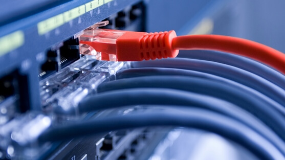

Монтаж слаботочных сетей (СКС, ЛВС)
Современный монтаж структурированной кабельной системы позволяет добиться передачи данных на высокой скорости. При этом расстояние не сильно влияет на возможности. Сегодня СКС может охватывать сразу несколько зданий. Характерными особенностями систем являются:
- способность передачи любого типа данных (звук, изображение, цифровые данные и так далее);
- универсальное применение (допустимо совмещение оборудования различных производителей);
- мультимедийная передача (возможность совместить коаксиальный, оптоволоконный кабели, а также передавать информацию по STP);
- возможность масштабирования, гибкость системы и прочее.

Стоит отметить, что развитие технологий позволило создать несколько стандартов, отличающихся происхождением. Специалисты нашей компании проведут монтаж на основе требований клиента, особенностей деятельности фирмы и государственных стандартов.
Этапы монтажа СКС
Чтобы провести монтаж систем СКС в офисе, необходимо соблюсти ряд условий и факторов, которые могут повлиять на качество и надежность. Весь процесс делится на несколько основных этапов:
- Предпроектное обследование. Важным моментом на данном этапе является осмотр объекта и информации, использующейся в технической документации фирмы. Сбор сведений позволит создать проект в соответствии с требованиями.
- Проектирование и монтаж СКС. Основные этапы, на которых создается ряд схем и чертежей. После согласования проекта с заказчиком, специалисты приступают к монтажным работам. Они включают в себя:
- установку кабельных трасс;
- выполнение подготовительных работ;
- прокладку проводов и кабелей, а также основных элементов системы;
- монтаж и заделка кабелей на коммутационных панелях.
- Тестирование. После проведения монтажа специалисты «Бит и Байт» проведут тестовый запуск и диагностику системы на предмет работоспособности.
- Заключительным этапом становится составление пакета документации с отчетом тестирования.
На этом монтаж сетей СКС завершается. С учетом сложности проведения работы, она может занять много времени, поскольку требует ответственного подхода и обеспечения связи между большим количеством техники в здании.
Почему за проектированием и монтажом компьютерных сетей стоит обратиться к нам?
Монтаж компьютерных сетей в Москве может проводиться по зарубежным стандартам. В зависимости от оборудования, используемого компанией, наши специалисты предлагают оптимальные способы монтажа. С нами вы сможете получить СКС и ЛВС (локальную вычислительную сеть) в кратчайшие сроки. При этом опыт наших специалистов гарантирует надежность и высокое качество выполненных работ.